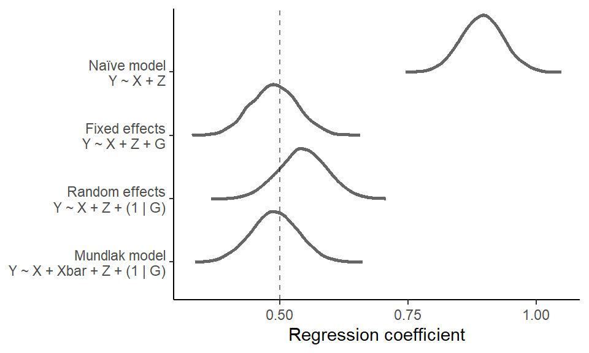
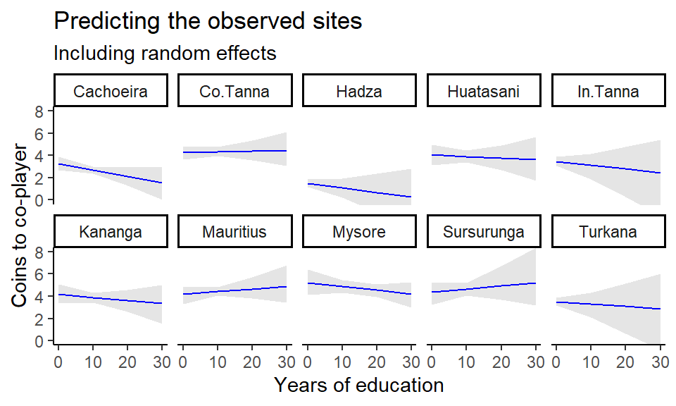

Chapter 7 Multilevel Modelling and Mundlak’s Legacy
7.1 Multilevel malaria medicine
To reproduce the figure comparing random and fixed effects, we first load the malaria subsidy data and fit the five models. We again use the brms package with default prior settings, but models could just as well be implemented using e.g., lme4.
7.1.6 Plot models in a panel
First, we extract and collect model coefficients in a data frame.
FEREpanel <- data.frame(intercept = c(fixef(msimp)[1],
fixef(mran)[1],
coef(mran)$stratum[,1,1],
fixef(mran2)[1],
coef(mran2)$stratum[,1,1],
fixef(mfix)[1],
fixef(mfix)[3:29] + fixef(mfix)[1],
fixef(mfix2)[1],
fixef(mfix2)[3:29] + fixef(mfix2)[1]),
slope = c(fixef(msimp)[1],
fixef(mran)[2],
coef(mran)$stratum[,1,2],
fixef(mran2)[2],
coef(mran2)$stratum[,1,2],
rep(fixef(mfix)[2],28),
fixef(mfix2)[2],
fixef(mfix2)[30:56] + fixef(mfix2)[2]),
g = c(1, rep(1:29, 2), rep(1:28, 2)),
grand = c(1, 1, rep(0,28), 1, rep(0,28), rep(0, 56)),
model = c("Y ~ 1 + X",
rep("Y ~ 1 + X + (1 | G)", 29),
rep("Y ~ 1 + X + (1 + X | G)", 29),
rep("Y ~ 1 + X + G", 28),
rep("Y ~ 1 + X * G", 28)))Next, we generate predictions from each of the models.
# Define a range of x-values (here, it's simply control (X = 0) vs. treatment (X = 1)
x_values <- seq(0, 1, by = 1)
# Expand the dataframe to include x-values for each line...
FEREpanel <- FEREpanel |>
tidyr::expand_grid(x = x_values) |>
# ... and compute predictions for control vs. treatment
dplyr::mutate(y = intercept + slope * x)Then we plot predictions from each of the models
# Set y-axis limit
ylim <- c(0,1)
# Generate individual plots
p1 <- FEREpanel |>
filter(model == "Y ~ 1 + X") |>
ggplot(aes(x = x,
y = y)) +
geom_line() +
theme_classic() +
labs(subtitle = "Simple intercept and slope",
title = "Y ~ 1 + X",
y = NULL, x = NULL) +
scale_x_continuous(breaks = c(0,1),
labels = c("Control", "Treatment"),
expand = c(0.1, 0.1)) +
coord_cartesian(ylim = ylim)
p2 <- FEREpanel |>
filter(model == "Y ~ 1 + X + G") |>
ggplot(aes(x = x,
y = y,
group = g)) +
geom_line(alpha = 0.15) +
theme_classic() +
theme(legend.position = "none") +
labs(subtitle = "Fixed effects",
title = "Y ~ 1 + X + G",
y = "Prob. of taking ACT", x = NULL) +
scale_x_continuous(breaks = c(0,1),
labels = c("Control", "Treatment"),
expand = c(0.1, 0.1)) +
coord_cartesian(ylim = ylim)
p3 <- FEREpanel |>
filter(model == "Y ~ 1 + X * G") |>
ggplot(aes(x = x,
y = y,
group = g)) +
geom_line(alpha = 0.15) +
theme_classic() +
theme(legend.position = "none",
axis.ticks.y = element_blank(),
axis.text.y = element_blank()) +
labs(subtitle = "FE interacting X and group",
title = "Y ~ 1 + X * G",
y = NULL, x = NULL) +
scale_x_continuous(breaks = c(0,1),
labels = c("Control", "Treatment"),
expand = c(0.1, 0.1)) +
coord_cartesian(ylim = ylim)
p4 <- FEREpanel |>
filter(model == "Y ~ 1 + X + (1 | G)") |>
ggplot(aes(x = x,
y = y,
group = g,
alpha = factor(grand))) +
geom_line() +
scale_alpha_manual(values = c(0.15, 1)) +
theme_classic() +
theme(legend.position = "none") +
labs(subtitle = "Random intercepts",
title = "Y ~ 1 + X + (1 | G)",
y = NULL, x = NULL) +
scale_x_continuous(breaks = c(0,1),
labels = c("Control", "Treatment"),
expand = c(0.1, 0.1)) +
coord_cartesian(ylim = ylim)
p5 <- FEREpanel |>
filter(model == "Y ~ 1 + X + (1 + X | G)") |>
ggplot(aes(x = x,
y = y,
group = g,
alpha = factor(grand))) +
geom_line() +
scale_alpha_manual(values = c(0.15, 1)) +
theme_classic() +
theme(legend.position = "none",
axis.ticks.y = element_blank(),
axis.text.y = element_blank()) +
labs(subtitle = "Random intercepts and slopes",
title = "Y ~ 1 + X + (1 + X | G)",
y = NULL, x = NULL) +
scale_x_continuous(breaks = c(0,1),
labels = c("Control", "Treatment"),
expand = c(0.1, 0.1)) +
coord_cartesian(ylim = ylim)Finally, we panel the individual plots using the patchwork package
7.1.7 Regularized vs. empirical estimates
In the text, we show an alternative way to demonstrate partial pooling in a multilevel model. This is where we compare the regularized predictions from a multilevel model against the “empirical” estimates from a fixed effects model. We re-use the model objects from above, mfix2 and mran2, where the treatment effect is allowed to vary by strata.
First, we create two data frames that include the estimated treatment effect for each randomization stratum for each of the two models.
# Fixed effects treatment effects
coeffix <- data.frame(
strata = 1:28,
coef = fixef(mfix2)[c(2, 30:56), 1])
coeffix$coef[2:28] <- coeffix$coef[2:28] + coeffix$coef[1]
# Random effects treatment effects
coefran <- data.frame(
strata = 1:28,
coef = coef(mran2)$stratum[,"Estimate", "subsidy"])
# Compute strata sample sizes
N <- d |>
group_by(stratum) |>
summarise(N = n())
# Input strata sample sizes in data frames
coeffix$N <- N$N
coefran$N <- N$N
# Arrange data frames according to strata sample sizes
coeffix <- coeffix |> arrange(N)
coeffix$strata <- factor(coeffix$strata, levels = coeffix$strata)
coefran <- coefran |> arrange(N)
coefran$strata <- factor(coefran$strata, levels = coefran$strata)Then, we plot the stratum-specific treatment effects.
ggplot() +
geom_rect(aes(xmin = -Inf, xmax = Inf, ymin = 0.07, ymax = 0.3), fill = "lightgrey", alpha = 0.35) +
geom_hline(yintercept = 0.19, linetype = "dashed", alpha = 0.2, linewidth = 0.7) +
geom_line(data = rbind(coeffix, coefran),
aes(x = strata, y = coef, group = strata),
linewidth = 0.25,
alpha = 0.5) +
geom_point(data = coeffix, aes(x = strata, y = coef),
size = 1.5,
alpha = 0.9,
shape = 1) +
geom_point(data = coefran, aes(x = strata, y = coef),
size = 1.5,
color = "black") +
ylab("Treatment Effect") +
xlab("Randomization Strata\n(smallest to largest)") +
theme_classic() +
theme(axis.text.x = element_blank(),
axis.ticks = element_blank())Instead of using a fixed effects model, an alternative way to compute the “empirical” estimates would be to, within each stratum, take the mean of the outcome variable act for the control (subsidy = 0) and treatment (subsidy = 1) groups separately and then subtract those values.
d |>
# within each stratum and for each subsidy condition (control vs. treatment)...
group_by(stratum, subsidy) |>
# ... take the mean of the outcome variable
summarise("T" = mean(act, na.rm = T)) |>
# wrangle and name columns
tidyr::pivot_wider(names_from = "subsidy",
values_from = "T",
names_prefix = "T") |>
ungroup() |>
mutate(coef = T1 - T0)7.2 Simulating Mundlak
Here we show the simulation and plotting code for the synthetic Mundlak demonstration.
First, we simulate the confounded data and store it in d_sim
set.seed(2025)
# define sample size and effects
N_groups <- 30
N_id <- 500
a <- 0
bZY <- 1
bXY <- 0.5
g <- sample(1:N_groups, size = N_id, replace = TRUE) # sample into groups
Ug <- rnorm(N_groups, 1.5, 1) # group confounds
X <- rnorm(N_id, Ug[g], 1) # individual varying trait
Z <- rnorm(N_groups, 0, 1) # group varying trait (observed)
Y <- rnorm(N_id, a + bXY*X + Ug[g] + bZY*Z[g] )
# collect in data frame
d_sim <- data.frame(
Y = Y,
X = X,
Z = Z[g],
G = as.factor(g)
)To properly quantify uncertainty and obtain neat posterior distributions of the effects from each model, we again analyze the data in a Bayesian framework using brms with default priors. We fit our four models.
7.2.5 Plot effect estimate distributions
First, we extract posterior distributions of the coefficient of interest (X) from each model and collect in a data frame.
ndraws <- nrow(brms::as_draws_df(mNA, variable = "b_X"))
forest <- data.frame(bX = c(brms::as_draws_df(mNA, variable = "b_X")$b_X,
brms::as_draws_df(mFE, variable = "b_X")$b_X,
brms::as_draws_df(mRE, variable = "b_X")$b_X,
brms::as_draws_df(mMU, variable = "b_X")$b_X),
model = c(rep("Naïve model\nY ~ X + Z", ndraws),
rep("Fixed effects\nY ~ X + Z + G", ndraws),
rep("Random effects\nY ~ X + Z + (1 | G)", ndraws),
rep("Mundlak model\nY ~ X + Xbar + Z + (1 | G)", ndraws)))Next, the models are arranged…
forest$model <- factor(forest$model,
levels=c("Naïve model\nY ~ X + Z",
"Fixed effects\nY ~ X + Z + G",
"Random effects\nY ~ X + Z + (1 | G)",
"Mundlak model\nY ~ X + Xbar + Z + (1 | G)")) |>
forcats::fct_rev()… and then plotted.
forest |>
ggplot(aes(y = model, x = bX)) +
stat_halfeye(slab_fill = "white",
slab_color = "grey40",
color = "white") +
geom_vline(xintercept = 0.5,
linetype = "dashed",
alpha = 0.5) +
labs(y = NULL,
x = "Regression coefficient") +
scale_x_continuous(breaks = c(0.25, 0.5, 0.75, 1)) +
theme_classic()
7.4 Marginal effects in a multilevel model
As we discuss in the text, there are several ways of obtaining predictions from a multilevel model, including predictions for each site, for an average site and marginal of site.
Note that we here show a general g-computation approach, where we first compute marginal effects within each MCMC draw (group_by(.draw, ...) |> summarise(.epred = mean(.epred))), before summarizing by the posterior mean and quantile intervals across MCMC draws (group_by(FORMALED) |> summarise(.epred = mean_qi(.epred))). In the current data example, the group_by(.draw, ...) step is redundant, but it’s how we would go about applying g-computation to obtain marginal effects in a setting with a continuous focal (causal) predictor and with possible covariates and nonlinearities.
First, we fit an extended Mundlak model, that allows the effect of education on religiosity to vary by site.
mMUcerc2 <- brm(Y ~ 1 + FORMALED + Xbar + (1 + FORMALED | SITE),
data = cerc,
cores = 4, seed = 1,
file = "fits/mMUcerc2.rds")7.4.1 Predicting the observed sites
We can then visualize effect estimates for each group (field site, in this case) across the full range of observed education years and at site-specific average years of education.
# prepare prediction grid across full range of education years...
nd <- tidyr::expand_grid(FORMALED = c(0,10,20,30),
SITE = unique(cerc$SITE))
# ... and at site-specific average years of education
nd$Xbar <- rep(unique(cerc$Xbar), length(unique(nd$FORMALED)))Plot predictions for each site in separate panels. For this, we need to include the random effects in the predictions.
# Predict effect estimates...
add_epred_draws(mMUcerc2,
# for prediction grid and...
newdata = nd,
# ... *include* all random effect components.
re_formula = NULL) |>
# Compute average effect *within* each MCMC draw.
group_by(.draw, SITE, FORMALED) |>
summarise(.epred = mean(.epred)) |>
# Summarise average effect *across* each MCMC draw
# for each site and educational level.
group_by(SITE, FORMALED) |>
summarise(mean_qi(.epred)) |>
# Plot!
ggplot(aes(x = FORMALED, y = y, ymin = ymin, ymax = ymax)) +
geom_lineribbon(color = "blue",
fill = "grey90",
linewidth = 0.5) +
coord_cartesian(ylim = c(0,8)) +
facet_wrap(~SITE, nrow = 2) +
theme_classic() +
theme(legend.position = "none") +
labs(title = "Predicting the observed sites",
subtitle = "Including random effects",
x = "Years of education", y = "Coins to co-player")
But we can also ignore site-specific effects altogether and instead aim at predicting a perfectly average site. This amounts to ignoring the random effects of the model. We first need to set up a new prediction grid for the new hypothetical site – let’s call it “Newland” – with an average of 7 years of education, the average of the site averages (this can be checked by running mean(unique(cerc$Xbar))).
nd2 <- tidyr::expand_grid(FORMALED = c(0,10,20,30),
SITE = "Newland", # could also just set to NA
Xbar = 7) # could also make a distribution of Xbars to average over# Predict effect estimates...
p1 <- add_epred_draws(mMUcerc2,
# for new prediction grid and...
newdata = nd2,
# ... *ignore* all random effect components.
re_formula = NA) |>
# Compute average effect *within* each MCMC draw.
group_by(.draw, FORMALED) |>
summarise(.epred = mean(.epred)) |>
# Summarise average effect *across* MCMC draws
# for each educational level.
group_by(FORMALED) |>
summarise(mean_qi(.epred)) |>
# Plot!
ggplot(aes(x = FORMALED, y = y, ymin = ymin, ymax = ymax)) +
geom_lineribbon(color = "blue",
fill = "grey90",
linewidth = 0.5) +
coord_cartesian(ylim = c(0,8)) +
scale_fill_brewer() +
theme_classic() +
theme(legend.position = "none") +
labs(title = "Predicting the average site",
subtitle = "Ignoring random effects",
x = "Years of education", y = "Coins to co-player")And finally, we could be interested in predicting a new site drawing from all that we know about the observed sites. This amounts to averaging over – instead of ignoring, as above – the uncertainty that we have around the observed sites and generating predictions from that.
# Predict effect estimates...
p2 <- add_epred_draws(mMUcerc2,
# for prediction grid and...
newdata = nd2,
# ... *include* all random effect components.
re_formula = NULL,
# Allow predictions for an unobserved group and...
allow_new_levels = TRUE,
# ... sample from the implied multivariate gaussian.
sample_new_levels = "gaussian") |>
# Compute average effect *within* each MCMC draw.
group_by(.draw, FORMALED) |>
summarise(.epred = mean(.epred)) |>
# Summarise average causal effect across MCMC draws
# for each educational level.
group_by(FORMALED) |>
summarise(mean_qi(.epred)) |>
# Plot!
ggplot(aes(x = FORMALED, y = y, ymin = ymin, ymax = ymax)) +
geom_lineribbon(color = "blue",
fill = "grey90",
linewidth = 0.5) +
coord_cartesian(ylim = c(0,8)) +
scale_fill_brewer() +
theme_classic() +
theme(legend.position = "none") +
labs(title = "Predicting a new site",
subtitle = "Averaging over random effects",
x = "Years of education", y = NULL) +
scale_y_continuous(breaks = NULL)7.4.2 Frequentist workflow
For completeness, we can also plot predictions for each site with a frequentist approach.
First, we fit a corresponding frequentist model.
Next, we obtain predictions using the marginaleffects package to obtain confidence intervals. Now, the frequentist approach excludes uncertainty in the random effects, so it’s not entirely comparable to the predictions obtained in the text.
library(marginaleffects)
# Predicting the observed sites (only with uncertainty in the global/fixed effects parameters)
predictions(mMUcerc2_freq,
newdata = nd) |>
ggplot(aes(x = FORMALED, y = estimate, ymin = conf.low, ymax = conf.high)) +
geom_lineribbon(color = "blue",
fill = "grey90",
linewidth = 0.5) +
coord_cartesian(ylim = c(0,8)) +
facet_wrap(~SITE, nrow = 2) +
theme_classic() +
theme(legend.position = "none") +
labs(title = "Predicting the observed sites",
subtitle = "Frequentist version",
x = "Years of education", y = "Coins to co-player")7.5 Session info
## R version 4.4.0 (2024-04-24 ucrt)
## Platform: x86_64-w64-mingw32/x64
## Running under: Windows 10 x64 (build 19045)
##
## Matrix products: default
##
##
## locale:
## [1] LC_COLLATE=Danish_Denmark.utf8 LC_CTYPE=Danish_Denmark.utf8
## [3] LC_MONETARY=Danish_Denmark.utf8 LC_NUMERIC=C
## [5] LC_TIME=Danish_Denmark.utf8
##
## time zone: Europe/Copenhagen
## tzcode source: internal
##
## attached base packages:
## [1] stats graphics grDevices utils datasets methods base
##
## other attached packages:
## [1] lme4_1.1-35.3 Matrix_1.7-0 tidybayes_3.0.6
## [4] brms_2.21.0 Rcpp_1.0.12 emmeans_1.10.4
## [7] marginaleffects_0.21.0 mice_3.16.0 dplyr_1.1.4
## [10] cobalt_4.5.5 causaldata_0.1.3 sandwich_3.1-0
## [13] patchwork_1.2.0 ggplot2_3.5.1
##
## loaded via a namespace (and not attached):
## [1] gridExtra_2.3 inline_0.3.19 rlang_1.1.3
## [4] magrittr_2.0.3 matrixStats_1.3.0 compiler_4.4.0
## [7] mgcv_1.9-1 loo_2.7.0 vctrs_0.6.5
## [10] reshape2_1.4.4 stringr_1.5.1 pkgconfig_2.0.3
## [13] shape_1.4.6.1 arrayhelpers_1.1-0 crayon_1.5.2
## [16] fastmap_1.2.0 backports_1.5.0 labeling_0.4.3
## [19] utf8_1.2.4 rmarkdown_2.27 nloptr_2.0.3
## [22] purrr_1.0.2 xfun_0.44 glmnet_4.1-8
## [25] jomo_2.7-6 cachem_1.1.0 jsonlite_1.8.8
## [28] collapse_2.0.14 highr_0.11 chk_0.9.1
## [31] pan_1.9 broom_1.0.6 parallel_4.4.0
## [34] R6_2.5.1 bslib_0.7.0 stringi_1.8.4
## [37] StanHeaders_2.32.9 boot_1.3-30 rpart_4.1.23
## [40] jquerylib_0.1.4 estimability_1.5.1 bookdown_0.39
## [43] rstan_2.32.6 iterators_1.0.14 knitr_1.47
## [46] zoo_1.8-12 bayesplot_1.11.1 splines_4.4.0
## [49] nnet_7.3-19 tidyselect_1.2.1 rstudioapi_0.16.0
## [52] abind_1.4-5 yaml_2.3.8 codetools_0.2-20
## [55] pkgbuild_1.4.4 lattice_0.22-6 tibble_3.2.1
## [58] plyr_1.8.9 withr_3.0.0 bridgesampling_1.1-2
## [61] posterior_1.5.0 coda_0.19-4.1 evaluate_0.23
## [64] survival_3.5-8 RcppParallel_5.1.7 ggdist_3.3.2
## [67] pillar_1.9.0 tensorA_0.36.2.1 checkmate_2.3.1
## [70] foreach_1.5.2 stats4_4.4.0 insight_0.20.1
## [73] distributional_0.4.0 generics_0.1.3 rstantools_2.4.0
## [76] munsell_0.5.1 scales_1.3.0 minqa_1.2.7
## [79] xtable_1.8-4 glue_1.7.0 tools_4.4.0
## [82] data.table_1.15.4 forcats_1.0.0 mvtnorm_1.2-5
## [85] grid_4.4.0 tidyr_1.3.1 QuickJSR_1.1.3
## [88] colorspace_2.1-0 nlme_3.1-164 cli_3.6.2
## [91] svUnit_1.0.6 fansi_1.0.6 Brobdingnag_1.2-9
## [94] gtable_0.3.5 sass_0.4.9 digest_0.6.35
## [97] farver_2.1.2 htmltools_0.5.8.1 lifecycle_1.0.4
## [100] mitml_0.4-5 MASS_7.3-60.2